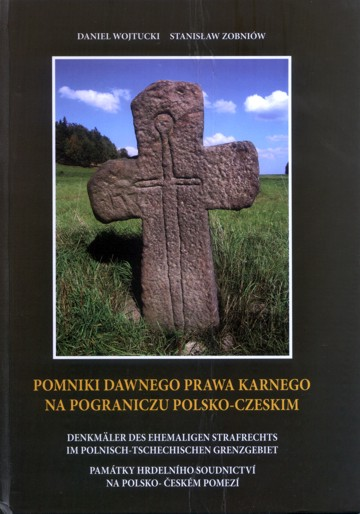

lit. 80
dodano: 23-08-2015
autor:
Danel Wojtucki, Stanisław Zobniów
tytuł:
Pominiki dawnego prawa karnego na pograniczu polsko-czeskim
wydawca:
Agencja Reklamowo-Wydawnicza A. Grzegorczyk, Wrocław 2007
ISBN
83-89961-23-7

.
Wróć